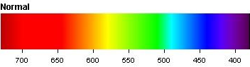
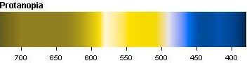
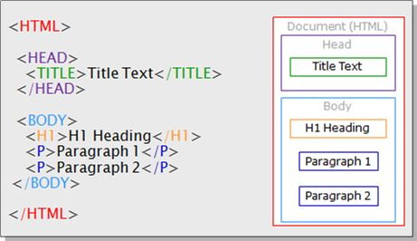

Integrating Accessbility Alt Text This stands for alternative text. This is most often used to simply describe some media on a site without use of complex language. The reason for this is because the alt text is read out, with the use of a screen reader, for those that are unable to see the resource themselves thus need a way to identify what it consists of. Implementation of Alt Text Alt text is very simple to add to a site but must be considered when choosing what the alt text says. When adding an image you use the <img> tag. This tag then has an alt attribute that can be used to create the alt text. For Example: alt="Grey Wolf Howling" Alt text will show when the image's source cannot be found or with software that can retrieve alt text. Below we have two images with alt text, however on the right there is no image source, meaning the alt text is shown instead. This alt text isn't completely descriptive but it's to the point and still explains what the image contains. This is the type of alt text required and is good practice. Bad practice would be to include alt text that is too vague, too long and complicated (with lots of jargon) or not including any alt text at all. The following is bad alt text for the same image. alt="" alt="wolf" alt="Wolf coloured with different shades of grey, white and black looks skyward with eyes closed and howls." For obvious reasons these alt text decisions aren't great, and considering a user that is hard of sight, these explanations of the image would be very unhelpful. Web-Safe Colours One very important accessibility feature that is often forgotten is the colour scheme of the site. Many users could have a form of colour blindness, with this in mind the colours chosen must either be universally identifiable colours, or the site must have the option to change the colour scheme where necessary. There are 3 main types of colour blindness; Protanopia - This is also known as a blindness to the colour red, leaving the ability to only see blue and green. Deuteranopia - This is known as blindness to the colours Red and Green, leaving the eyes to absorb only blue. Tritanopia - This is know as blindness to the colours Blue and yellow but are able to identify red and green. Click the names of the type of colour blindness above to see the differences between each of them compared to normal vision!   Structuring Tags Correctly HTML tags are there for a reason and must be used in the structure that they were intended. Keeping headings as headings, nesting the correct paragraph tags inside the current div/section tags to keep things organised is very important. Doing this makes the site a lot easier to follow and understand. The reason this is so important to follow from an accessibility standpoint is because of the layout issue. If a site is hard to follow for a user, it implies bad web design and massive confusion for said user. This error then becomes worse when a user that struggles with a disabality such as their learning attempts to use the site. The following is an example of good practice when it comes to HTML tags:  (Jugaduu) The above image is a good example of a basic HTML structure. Judging from the attached diagram of what the page would look like, it is clear to tell what each part of the page is for and where it is located. A couple of major points to consider would be indentation, closing all tags and understanding the difference between the head and body. Indentation allows the webmaster to see the layout of the code a lot more clearly which greatly improves development. Closing tags ensures the site will display correctly and function how you intend it to without breaking everything. Finally, the head and body function in different ways and must be understood before developing. The head is for the more 'backend' or 'behind the curtain' HTML that isn't displayed on the web page itself. The body is where everything is displayed to the web page and can be seen by the end user. Functionality One key point here is access through mouse and keyboard. If the site cannot be navigated through mouse and keyboard, this is a massive breach of accessibility as many users will have to rely on a single type of functionality that may not be native to them or could be something they cannot use in the first place. Good site structure also helps with this as it allows keyboard users to easily navigate through the site without use of a mouse. The main point to bring home here is correct tag structure as this will allow a user to use TAB and ENTER to navigate and use each button and 'clickable' feature throughout the site. Also, as keyboard navigation uses outlines as a way to see which part of the site is currently selected, it is important to note that this outline can be changed in any way you want. The web browser will provide a default look for this but if there is a clash with colour scheme or you believe the outline is too thin to see against your site, the look can be changed within your CSS. Almost all items on the page that can be clicked by a mouse can be targeted by a keyboard too. However, some custom made widgets and items on the site may be invisible to the keyboard navigation. This means that the site must be thoroughly tested for keyboard accessibility. WebAIM have a great article here that show how to test for keyboard functionality. Assisting Screen Readers Screen readers are very important to visually impaired users as it helps them understand what is being presented on the screen. Making sure that you use the correct syntax and well worded descriptions for everything is key. One important addition that is greatly overlooked is the caption tag for tables. This allows a screen reader to find the title of a table with ease without just a simple visual indication of what the table is all about. Another simple feature that can be added to assist a screen reader is the pages language(s). Within the HTML tag there is an attribute called lang that can be added and assigned to a language. An example of this would be <html lang="en"> to tell the screen reader the site is in english. Screen readers are also another reason why tags should be correctly structured and implemented. The reader will read out the content along with the title granted to that section of the page. As an example, if the title is simply put within the p tag instead of being declared as a title or a heading, this could confuse the user as there would be no explanation of said section and the title would be fused into one sentence with the rest of the text.